row-disabled en la matriz porque no aplica en la práctica en ningún país (ES tiene como máximo U7D = 7 días). La discrepancia desaparece porque el nivel no se renderiza activamente.
| Nivel | Caption | Airing Estándar | Airing Grabación | ||||
|---|---|---|---|---|---|---|---|
| Default inline | Detail Page | Serie grupo | Default inline | Detail Page | Serie grupo | ||
| Pasado +1 año | EmitidoEmitido 10/12/25 | Emitido 10/12/25 | Emitido 10/12/25 | Emitido 10/12/25: T2 Ep12 Primera vez… | Grabado 10/12/25 | Grabado 10/12/25 | Grabado 10/12/25: T2 Ep12 Primera vez… |
| Pasado +7 días | EmitidoEmitido 10 dic. | Emitido 10 diciembre | Emitido 10 diciembre | Emitido 10 diciembre: T2 Ep12 Primera vez… | Grabado 10 diciembre | Grabado 10 diciembre | Grabado 10 diciembre: T2 Ep12 Primera vez… |
| Pasado 2-7 días | U7DU7D jue. 10 | Emitido jueves, 20:00 | U7D Emitido jueves, 20:00 | Emitido jueves, 20:00: T2 Ep12 Primera vez… | Grabado jueves, 20:00 | Grabado jueves, 20:00 | Grabado jueves, 20:00: T2 Ep12 Primera vez… |
| Pasado Ayer | U7DU7D ayer | Emitido ayer, 20:00 | U7D Emitido ayer, 20:00 | Emitido ayer, 20:00: T2 Ep12 Primera vez… | Grabado ayer, 20:00 | Grabado ayer, 20:00 | Grabado ayer, 20:00: T2 Ep12 Primera vez… |
| Pasado Hoy | 15:00U7D hoy | 15:00Emitido hoy, 20:00 | U7D 15:00Emitido hoy, 20:00 | 15:00: T2 Ep12 Primera vez…Emitido hoy, 20:00: T2 Ep12 Primera vez… | Grabado hoy, 20:00 | Grabado hoy, 20:00 | Grabado hoy, 20:00: T2 Ep12 Primera vez… |
| Directo | [Timeline] | En emisión, 22:00 - 00:50 | En emisión time fuera del string → 00:50/00:50 en el CTA |
En emisión: T2 Ep12 Primera vez… time fuera del string → 00:50/00:50 en el CTA |
Grabando, 22:00 - 00:50 | Grabando time fuera del string → 00:50/00:50 en el CTA |
Grabando: T2 Ep12 Primera vez… time fuera del string → 00:50/00:50 en el CTA |
| Futuro Hoy | 17:00Hoy, 20:00 | 17:00Hoy, 20:00 | 17:00Hoy, 20:00 | 17:00: T2 Ep12 Primera vez…Hoy, 20:00: T2 Ep12 Primera vez… | Programado Hoy, 20:00 | Programado Hoy, 20:00 | Programado Hoy, 20:00: T2 Ep12 Primera vez… |
| Futuro Mañana | PróximamenteMañana | Mañana, 20:00 | Próximamente Mañana, 22:00 | Próximamente Mañana, 22:00: T2 Ep12 Primera vez… | Programado Mañana, 20:00 | Programado Mañana, 20:00 | Programado Mañana, 20:00: T2 Ep12 Primera vez… |
| Futuro 2-7 días | PróximamenteJue. 10 | Jueves, 20:00 | Próximamente Jueves, 20:00 | Próximamente Jueves, 20:00: T2 Ep12 Primera vez… | Programado Jueves, 20:00 | Programado Jueves, 20:00 | Programado Jueves, 20:00: T2 Ep12 Primera vez… |
| Futuro +7 días | Próximamente10 diciembre | 10 diciembre | Próximamente 10 diciembre | Próximamente 10 diciembre: T2 Ep12 Primera vez… | Programado 10 diciembre | Programado 10 diciembre | Programado 10 diciembre: T2 Ep12 Primera vez… |
Cada bloque de set tiene 3 sub-columnas por variante de render. Las celdas Serie grupo (todas las extrapoladas) añaden : + content sibling sobre el output de Default inline. Las celdas Detail Page Futuro sustituyen el prefix verbal por un badge externo al Airing.
| Nivel | Caption | Airing Estándar | Airing Grabación | ||||
|---|---|---|---|---|---|---|---|
| Default inline | Detail Page | Serie grupo | Default inline | Detail Page | Serie grupo | ||
| Pasado +1 año | EmitidoEmitido 10/12/25 | Emitido 10/12/25 | Emitido 10/12/25 | Emitido 10/12/25: T2 Ep12 Primera vez… | Grabado 10/12/25 | Grabado 10/12/25 | Grabado 10/12/25: T2 Ep12 Primera vez… |
| Pasado +7 días | EmitidoEmitido 10 dic. | Emitido 10 diciembre | Emitido 10 diciembre | Emitido 10 diciembre: T2 Ep12 Primera vez… | Grabado 10 diciembre | Grabado 10 diciembre | Grabado 10 diciembre: T2 Ep12 Primera vez… |
| Pasado 2-7 días | EmitidoEmitido jue. 10 | Emitido jueves, 20:00 | Emitido jueves, 20:00 | Emitido jueves, 20:00: T2 Ep12 Primera vez… | Grabado jueves, 20:00 | Grabado jueves, 20:00 | Grabado jueves, 20:00: T2 Ep12 Primera vez… |
| Pasado Ayer | EmitidoEmitido ayer | Emitido ayer, 20:00 | Emitido ayer, 20:00 | Emitido ayer, 20:00: T2 Ep12 Primera vez… | Grabado ayer, 20:00 | Grabado ayer, 20:00 | Grabado ayer, 20:00: T2 Ep12 Primera vez… |
| Pasado Hoy | 15:00Emitido hoy | 15:00Emitido hoy, 20:00 | 15:00Emitido hoy, 20:00 | 15:00: T2 Ep12 Primera vez…Emitido hoy, 20:00: T2 Ep12 Primera vez… | Grabado hoy, 20:00 | Grabado hoy, 20:00 | Grabado hoy, 20:00: T2 Ep12 Primera vez… |
| Directo | [Timeline] | En emisión, 22:00 - 00:50 | En emisión time fuera del string → 00:50/00:50 en el CTA |
En emisión: T2 Ep12 Primera vez… time fuera del string → 00:50/00:50 en el CTA |
Grabando, 22:00 - 00:50 | Grabando time fuera del string → 00:50/00:50 en el CTA |
Grabando: T2 Ep12 Primera vez… time fuera del string → 00:50/00:50 en el CTA |
| Futuro Hoy | 17:00Hoy, 20:00 | 17:00Hoy, 20:00 | 17:00Hoy, 20:00 | 17:00: T2 Ep12 Primera vez…Hoy, 20:00: T2 Ep12 Primera vez… | Programado Hoy, 20:00 | Programado Hoy, 20:00 | Programado Hoy, 20:00: T2 Ep12 Primera vez… |
| Futuro Mañana | PróximamenteMañana | Mañana, 20:00 | Próximamente Mañana, 22:00 | Próximamente Mañana, 22:00: T2 Ep12 Primera vez… | Programado Mañana, 20:00 | Programado Mañana, 20:00 | Programado Mañana, 20:00: T2 Ep12 Primera vez… |
| Futuro 2-7 días | PróximamenteJue. 10 | Jueves, 20:00 | Próximamente Jueves, 20:00 | Próximamente Jueves, 20:00: T2 Ep12 Primera vez… | Programado Jueves, 20:00 | Programado Jueves, 20:00 | Programado Jueves, 20:00: T2 Ep12 Primera vez… |
| Futuro +7 días | Próximamente10 diciembre | 10 diciembre | Próximamente 10 diciembre | Próximamente 10 diciembre: T2 Ep12 Primera vez… | Programado 10 diciembre | Programado 10 diciembre | Programado 10 diciembre: T2 Ep12 Primera vez… |
Cada bloque de set tiene 3 sub-columnas por variante de render. Las celdas Serie grupo (todas las extrapoladas) añaden : + content sibling sobre el output de Default inline. Las celdas Detail Page Futuro sustituyen el prefix verbal por un badge externo al Airing.
| Nivel | Caption | Airing Estándar | Airing Grabación | ||||
|---|---|---|---|---|---|---|---|
| Default inline | Detail Page | Serie grupo | Default inline | Detail Page | Serie grupo | ||
| Pasado +1 año | ExibidoExibido 10/12/25 | Exibido 10/12/25 | Exibido 10/12/25 | Exibido 10/12/25: T2 Ep12 Primera vez… | Gravado 10/12/25 | Gravado 10/12/25 | Gravado 10/12/25: T2 Ep12 Primera vez… |
| Pasado +7 días | ExibidoExibido 10 dez.★ | Exibido 10 dezembro | Exibido 10 dezembro | Exibido 10 dezembro: T2 Ep12 Primera vez… | Gravado 10 dezembro | Gravado 10 dezembro | Gravado 10 dezembro: T2 Ep12 Primera vez… |
| Pasado 2-7 días | ExibidoExibido qui, 10★ | Exibido quinta, 20:00 | Exibido quinta, 20:00 | Exibido quinta, 20:00: T2 Ep12 Primera vez… | Gravado quinta, 20:00 | Gravado quinta, 20:00 | Gravado quinta, 20:00: T2 Ep12 Primera vez… |
| Pasado Ayer | ExibidoExibido ontem★ | Exibido ontem, 20:00 | Exibido ontem, 20:00 | Exibido ontem, 20:00: T2 Ep12 Primera vez… | Gravado ontem, 20:00 | Gravado ontem, 20:00 | Gravado ontem, 20:00: T2 Ep12 Primera vez… |
| Pasado Hoy | 15:00★Exibido hoje★ | 15:00★Exibido hoje, 20:00★ | 15:00★Exibido hoje, 20:00★ | 15:00: T2 Ep12 Primera vez…★Exibido hoje, 20:00: T2 Ep12 Primera vez…★ | Gravado hoje, 20:00 | Gravado hoje, 20:00 | Gravado hoje, 20:00: T2 Ep12 Primera vez… |
| Directo | [Timeline] | No ar, 22:00 - 00:50 | No ar time fuera del string → 00:50/00:50 en el CTA |
No ar: T2 Ep12 Primera vez… time fuera del string → 00:50/00:50 en el CTA |
Gravando, 22:00 - 00:50 | Gravando time fuera del string → 00:50/00:50 en el CTA |
Gravando: T2 Ep12 Primera vez… time fuera del string → 00:50/00:50 en el CTA |
| Futuro Hoy | 17:00★Hoje, 20:00★ | 17:00★Hoje, 20:00★ | 17:00★Hoje, 20:00★ | 17:00: T2 Ep12 Primera vez…★Hoje, 20:00: T2 Ep12 Primera vez…★ | Programado Hoje, 20:00 | Programado Hoje, 20:00 | Programado Hoje, 20:00: T2 Ep12 Primera vez… |
| Futuro Mañana | Em breve★Amanhã | Amanhã, 20:00 | Em breve★ Amanhã, 22:00 | Em breve★ Amanhã, 22:00: T2 Ep12 Primera vez… | Programado Amanhã, 20:00 | Programado Amanhã, 20:00 | Programado Amanhã, 20:00: T2 Ep12 Primera vez… |
| Futuro 2-7 días | Em breve★Qui, 10★ | Quinta, 20:00 | Em breve★ Quinta, 20:00 | Em breve★ Quinta, 20:00: T2 Ep12 Primera vez… | Programado Quinta, 20:00 | Programado Quinta, 20:00 | Programado Quinta, 20:00: T2 Ep12 Primera vez… |
| Futuro +7 días | Em breve★10 dezembro | 10 dezembro | Em breve★ 10 dezembro | Em breve★ 10 dezembro: T2 Ep12 Primera vez… | Programado 10 dezembro | Programado 10 dezembro | Programado 10 dezembro: T2 Ep12 Primera vez… |
★ Celda inferida por convención (espejo ES + reglas PT). Validar con Localization VIVO. Pendientes principales: "quinta" vs "quinta-feira", abreviación de meses, equivalente PT de "Próximamente" (¿"Em breve"? ¿"Em breve"?).
| Nivel | Caption | Airing Estándar (V1) | Airing Grabación (V1) | ||||
|---|---|---|---|---|---|---|---|
| Default inline | Detail Page | Serie grupo | Default inline | Detail Page | Serie grupo | ||
| Pasado +1 año | Gesendet10.12.25★ gesendet | Gesendet 10.12.2510.12.25 gesendet | Gesendet 10.12.2510.12.25 gesendet | Gesendet 10.12.25: S2 Ep12 Erstes Mal in NYC…10.12.25: S2 Ep12 Erstes Mal in NYC… gesendet | Aufgenommen 10.12.2510.12.25 aufgenommen | Aufgenommen 10.12.2510.12.25 aufgenommen | Aufgenommen 10.12.25: S2 Ep12 Erstes Mal in NYC…10.12.25: S2 Ep12 Erstes Mal in NYC… aufgenommen |
| Pasado +7 días | Gesendet10. Dez.★ gesendet | Gesendet 10. Dezember10. Dezember gesendet | Gesendet 10. Dezember10. Dezember gesendet | Gesendet 10. Dezember: S2 Ep12 Erstes Mal in NYC…10. Dezember: S2 Ep12 Erstes Mal in NYC… gesendet | Aufgenommen 10. Dezember10. Dezember aufgenommen | Aufgenommen 10. Dezember10. Dezember aufgenommen | Aufgenommen 10. Dezember: S2 Ep12 Erstes Mal in NYC…10. Dezember: S2 Ep12 Erstes Mal in NYC… aufgenommen |
| Pasado 2-7 días | GesendetDo., 10.★ gesendet | Gesendet Donnerstag, 20:00Donnerstag, 20:00 gesendet | Gesendet Donnerstag, 20:00Donnerstag, 20:00 gesendet | Gesendet Donnerstag, 20:00: S2 Ep12 Erstes Mal in NYC…Donnerstag, 20:00: S2 Ep12 Erstes Mal in NYC… gesendet | Aufgenommen Donnerstag, 20:00Donnerstag, 20:00 aufgenommen | Aufgenommen Donnerstag, 20:00Donnerstag, 20:00 aufgenommen | Aufgenommen Donnerstag, 20:00: S2 Ep12 Erstes Mal in NYC…Donnerstag, 20:00: S2 Ep12 Erstes Mal in NYC… aufgenommen |
| Pasado Ayer | Gesendetgestern★ gesendet | Gesendet gestern, 20:00gestern, 20:00 gesendet | Gesendet gestern, 20:00gestern, 20:00 gesendet | Gesendet gestern, 20:00: S2 Ep12 Erstes Mal in NYC…gestern, 20:00: S2 Ep12 Erstes Mal in NYC… gesendet | Aufgenommen gestern, 20:00gestern, 20:00 aufgenommen | Aufgenommen gestern, 20:00gestern, 20:00 aufgenommen | Aufgenommen gestern, 20:00: S2 Ep12 Erstes Mal in NYC…gestern, 20:00: S2 Ep12 Erstes Mal in NYC… aufgenommen |
| Pasado Hoy | 15:00★heute★ gesendet | 15:00★heute, 20:00★ gesendet | 15:00★heute, 20:00★ gesendet | 15:00: S2 Ep12 Erstes Mal in NYC…★heute, 20:00: S2 Ep12 Erstes Mal in NYC…★ gesendet | Aufgenommen heute, 20:00heute, 20:00 aufgenommen | Aufgenommen heute, 20:00heute, 20:00 aufgenommen | Aufgenommen heute, 20:00: S2 Ep12 Erstes Mal in NYC…heute, 20:00: S2 Ep12 Erstes Mal in NYC… aufgenommen |
| Directo | [Timeline] | Live, 22:00 - 00:50 | Live time fuera del string → 00:50/00:50 en el CTA |
Live: S2 Ep12 Erstes Mal in NYC… time fuera del string → 00:50/00:50 en el CTA |
Aufnahme, 22:00 - 00:50 | Aufnahme time fuera del string → 00:50/00:50 en el CTA |
Aufnahme: S2 Ep12 Erstes Mal in NYC… time fuera del string → 00:50/00:50 en el CTA |
| Futuro Hoy | 17:00★Heute, 20:00★ | 17:00★Heute, 20:00★ | 17:00★Heute, 20:00★ | 17:00: S2 Ep12 Erstes Mal in NYC…★Heute, 20:00: S2 Ep12 Erstes Mal in NYC…★ | Geplant Heute, 20:00Heute, 20:00 geplant | Geplant Heute, 20:00 | Geplant Heute, 20:00: S2 Ep12 Erstes Mal in NYC… |
| Futuro Mañana | Demnächst★Morgen | Morgen, 20:00 | Demnächst★ Morgen, 22:00 | Demnächst★ Morgen, 22:00: S2 Ep12 Erstes Mal in NYC… | Geplant Morgen, 20:00Morgen, 20:00 geplant | Geplant Morgen, 20:00 | Geplant Morgen, 20:00: S2 Ep12 Erstes Mal in NYC… |
| Futuro 2-7 días | Demnächst★Do., 10.★ | Donnerstag, 20:00 | Demnächst★ Donnerstag, 20:00 | Demnächst★ Donnerstag, 20:00: S2 Ep12 Erstes Mal in NYC… | Geplant Donnerstag, 20:00Donnerstag, 20:00 geplant | Geplant Donnerstag, 20:00 | Geplant Donnerstag, 20:00: S2 Ep12 Erstes Mal in NYC… |
| Futuro +7 días | Demnächst★10. Dezember | 10. Dezember | Demnächst★ 10. Dezember | Demnächst★ 10. Dezember: S2 Ep12 Erstes Mal in NYC… | Geplant 10. Dezember10. Dezember geplant | Geplant 10. Dezember | Geplant 10. Dezember: S2 Ep12 Erstes Mal in NYC… |
★ Celda inferida por convención (espejo ES + reglas DE). V2 (word order): el participio (Gesendet, Aufgenommen, Geplant) va al final cuando hay date. Aplica como overlay a cualquier celda con participio. Ej: Gesendet Donnerstag, 20:00 → V2: Donnerstag, 20:00 gesendet. Dudas Localization O2: word order Caption (V1 o V2), abreviación weekday (full vs "Do."), meses largos ("Sep." vs "Sept."), equivalente DE de "Próximamente" (¿"Demnächst"?).
Proporciones reales del servicio. Cards usan img/mockup-cover-base.png como base. Respeta los selectores Locale, V1/V2 y Render (Tokens / Figma).
Cada celda se compone de tres bloques opcionales: Prefix DATE , Time
El bloque Time se separa de los anteriores con coma. La coma es opcional y existe solo cuando hay Time junto a algo previo. La capitalización inicial es regla de inicio de string. En Caption, weekdays y adverbios pueden abreviarse según locale.
Transformaciones que se aplican sobre el airing string según el contexto UI. Son ortogonales a los sets canónicos — un mismo set (e.g. Airing Estándar) puede renderizarse de varias formas según dónde aparezca. Documentadas aquí una vez; cada caso en la sección Contextos lleva un tag con la(s) variante(s) que aplica.
| Variante | Aplica a | Transformación sobre el airing string | Ejemplo |
|---|---|---|---|
| Default inline | Cards, pills, ContentInfo, captions de cover | Sin cambios. El airing string es el output completo de la celda canónica. | Emitido ayer, 20:00 |
| Prefix externo | Detail Page · Movie / Serie episodio (zona CTA superior) | El prefix sale del string — se renderiza como componente tk-badge separado ("Próximamente", "En emisión", "Grabación programada", etc.). El airing string omite el prefix. |
Próximamente Mañana, 22:00 |
| Trailing colon | Detail Page · Serie grupo (cuando hay episode info sibling) | Se añade : al final del airing string para introducir el sibling content que va a continuación (T2 Ep12, episodio info, etc.). Confirmado vía Figma: airing="En emisión:". |
En emisión: T2 Ep12 Primera vez en Nueva York |
| Live · progress | Detail Page · Live (Movie y Serie ep) | El time range sale del string. La barra de progreso vive en el CTA Ver / Play (no en Airing) como elemento hermano del botón. El componente Live (icono ((·))) sí aparece a la izquierda como hermano del airing string, dentro del componente Airing. |
En emisión + en el CTA: 00:50 / 00:50 |
Las variantes se combinan: Detail Page · Serie grupo Live aplica Prefix externo, Trailing colon y Live · progress al mismo tiempo.
AiringLo que el plugin genera es solo una parte. El componente Figma Airing incluye también el icono Live, el sibling de contenido (episodio info) y, externamente, los badges. Mapeo visual de los tokens dentro de Airing:
| Token | Mapea a | Cuándo aparece |
|---|---|---|
| Prefix | Texto airing · parte verbal del string | Pasado, Live, Futuro (Grab.) — según celda canónica |
| DATE | Texto airing · parte fecha del string | Casi todos los niveles excepto Live (Estándar) |
| , : | Separador interno del string | , separa Date y Time · : introduce sibling content |
| Time | Texto airing · hora HH:MM | Niveles Pasado 2-7d a Hoy-Ayer, Directo, Futuro Hoy-Mñn / 2-7d |
Componente Live (icono broadcast) | Solo Directo · Estándar (Detail Page / Serie grupo) | |
| Rec | Componente Recording (dot 🔴) | Directo · Grabación, también prefix externo Grab. programada |
| T2 Ep12… | Texto sibling content dentro de Airing | Serie grupo · cuando hay episodio info que renderizar a continuación |
Elementos externos al Airing — viven en otros componentes hermanos, pero impactan en cómo se renderiza el airing string:
| Token | Vive en | Cuándo aparece |
|---|---|---|
| Próximamente | Componente badge — hermano del Airing dentro de la card / detail | Futuro Hoy-Mñn / 2-7d en Detail Page · sustituye al prefix del airing string |
| U7D | Componente badge — hermano del Airing | Solo ES (Movistar+). Pasado Ayer Detail Page · marca el catch-up de los últimos 7 días. O2 y VIVO no usan este badge — su catch-up es por canal (24h, 48h, sin VOD). |
| 00:50 / 00:50 | Componente progress dentro del CTA Ver / Play — no del Airing | Solo Directo · el time range sale del airing string y se muestra como barra elapsed/total bajo el botón |
Cada contexto UI donde aparece una fecha. Cada uno se mapea a un set y celda de la matriz canónica. Si un contexto usa un formato que no coincide con su celda canónica, se marca como discrepancia abajo.
airing (minúscula) — el string que compone nuestro plugin
Componente Airing (mayúscula) — wrapper que incluye varios elementos
Otro elemento relacionado (ej. duration) — fuera del scope del plugin, a revisar aparte
Línea de info bajo el título de la cover en grid/detail. Una pill olive/amarilla contiene el string. Aplica a películas y episodios.
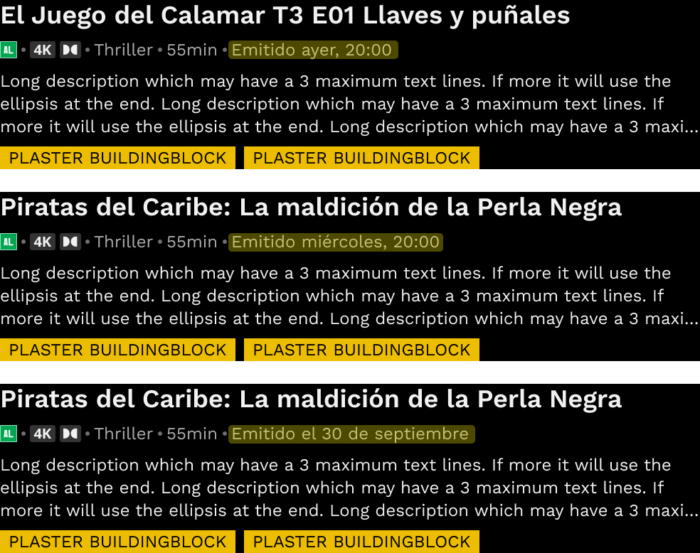
contentinfo-catchup-episodios.pngairing)Emitido ayer, 20:00·past_immediate · OKEmitido miércoles, 20:00→Emitido miércoles 10, 20:00Emitido el 30 de septiembre→Emitido 30 septiembre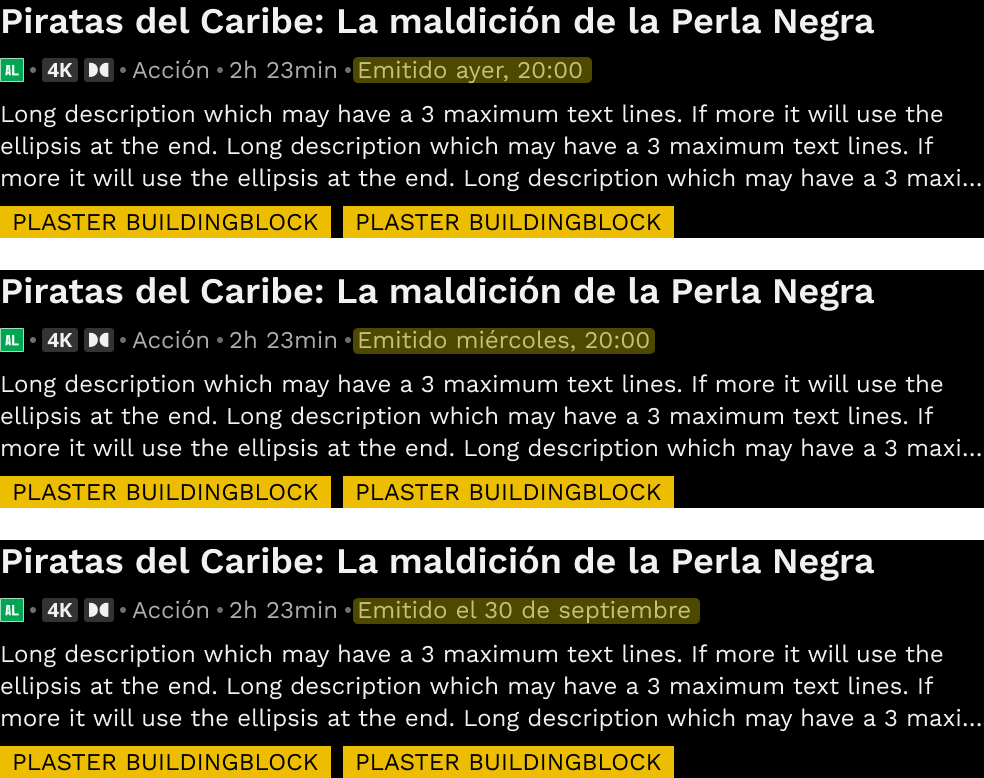
contentinfo-catchup-movies.pngairing)Emitido ayer, 20:00·past_immediate · OKEmitido miércoles, 20:00→Emitido miércoles 10, 20:00Emitido el 30 de septiembre→Emitido 30 septiembre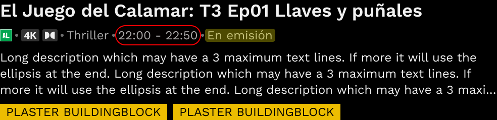
contentinfo-enemision-episodio.pngEn emisión·texto airing (amarillo)22:00 - 22:50 en rojo es elemento duration, no parte de airing. El texto airing aquí es solo "En emisión". Sin discrepancia en nuestro scope. duration queda fuera del modelo, a revisar aparte si su contenido o posición debería estandarizarse.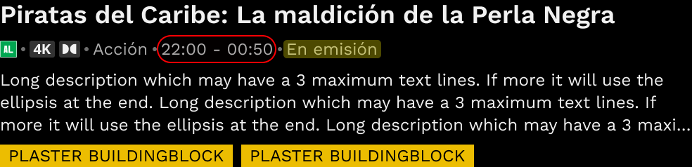
contentinfo-enemision-movie.pngEn emisión·texto airing (amarillo)22:00 - 00:50→elemento duration (rojo), cross-midnightduration, no en nuestro scope. Tema a revisar aparte: ¿debería indicar "+1d" o se entiende implícitamente?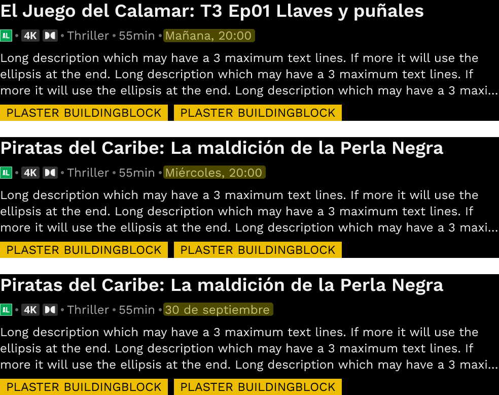
contentinfo-futuro-episodios.pngairingMañana, 20:00·future_immediate · OKMiércoles, 20:00→Miércoles 10, 20:0030 de septiembre→30 septiembre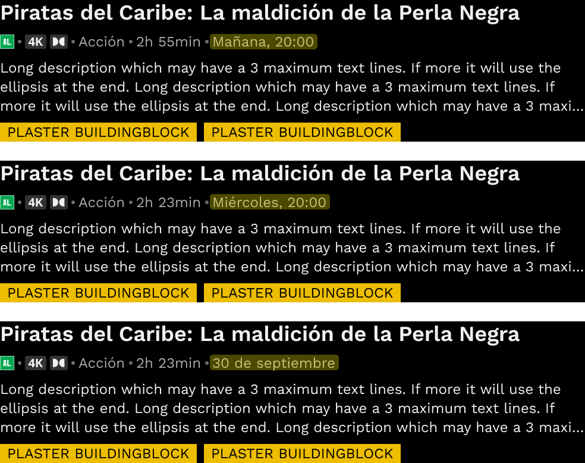
contentinfo-futuro-movies.pngairingMañana, 20:00·future_immediate · OKMiércoles, 20:00→Miércoles 10, 20:0030 de septiembre→30 septiembreSobre el botón Comprar/Ver/Grabar. Aquí los prefijos se separan en componentes badge externos.
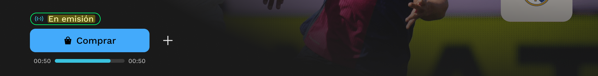
detail-movie-live.pngEn emisiónEn emisión·prefix-ext + live-progress combinados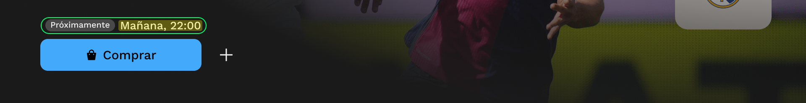
detail-movie-futuro.pngMañana, 22:00Mañana, 22:00·+ badge "Próximamente" externo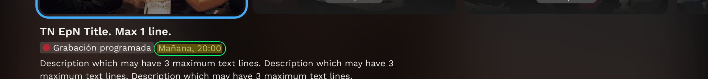
detail-grabacion-programada.pngMañana, 20:00Mañana, 20:00·+ 🔴 dot + "Grabación programada" como badge externodetail-serie-ep-live.pngEn emisiónEn emisión·CTA y progress son siblings, no airingdetail-serie-ep-futuro.pngMañana, 22:00Mañana, 22:00·+ "Próximamente" badge + botón Grabar (dot rojo)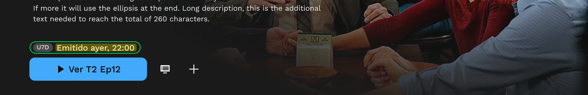
detail-serie-ep-catchup.pngEmitido ayer, 22:00Emitido ayer, 22:00·+ badge "U7D" disponibilidad (ortogonal a airing)En vistas de serie agrupada, el badge combina fecha/estado con info del episodio. Patrón nuevo a validar.
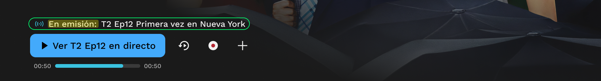
detail-serie-grupo-live.pngEn emisión: (con colon)En emisión:·texto airing confirmado en Figma (node 56741:25861)T2 Ep12 Primera vez en Nueva York·elemento sibling, no es airing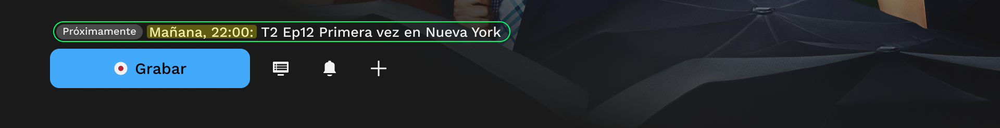
detail-serie-grupo-futuro.pngMañana, 22:00: (con colon)Mañana, 22:00:·+ "Próximamente" badge externo + episode info sibling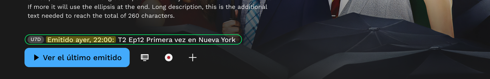
detail-serie-grupo-catchup.pngEmitido ayer, 22:00: (con colon)Emitido ayer, 22:00:·+ badge "U7D" disponibilidad + episode info siblingListas de grabaciones del usuario (las que ya tengo guardadas y las que tengo programadas). Dominio Airing Grabación. Aquí aparece un formato compacto distinto al spec actual de Airing Grabación.
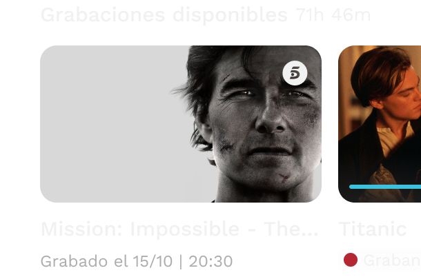
grabaciones-disponibles.pngGrabado el 15/10 | 20:30→Grabado 15 octubre, 20:30DD/MM sin año — la spec usa D mes para past_same_year o jueves, HH:MM para past_near. (c) Pipe | en vez de coma como separador.grabaciones-programadas.pngProgramado 15/10 | 20:30→Programado Jueves 15, 20:30DD/MM sin año — la spec usa Jueves, HH:MM para future_near o 10 octubre para future_far. (b) Pipe | en vez de coma. Inconsistencia interna: aquí no aparece "el" (sí en "Grabaciones disponibles"). Apunta a que "el" es probablemente un descuido del diseño.Casos donde el diseño actual no aplica la spec cerrada. Cada uno necesita: (a) corregir el diseño, (b) actualizar la spec, o (c) crear un sub-contexto explícito. Mi recomendación por defecto: corregir el diseño para usar la spec, salvo evidencia de que el contexto pide variante.
row-disabled en la matriz porque no aplica en la práctica en ningún país (ES tiene como máximo U7D = 7 días). La discrepancia desaparece porque el nivel no se renderiza activamente.
Emitido viernes, 20:00 (sin día). Spec previa con día: Emitido jueves 10, 20:00. Estado actual: spec en consulta con Producto — V2 (Caption abreviado jue. 10) ya lleva día, pero Default / Detail Page / Serie grupo de momento sin día. La discrepancia desaparecerá cuando Producto confirme.
duration en ContentInfo Live
El texto airing es solo "En emisión" — sin discrepancia. El time range "22:00 - 22:50" vive en elemento duration aparte, fuera de scope del plugin. Tema a revisar con quien dueña ese componente: ¿posición, formato, cross-midnight?
| en vez de coma
Diseño: Grabado 15/10 | 20:30. Spec: Grabado X, 20:30 con coma. El pipe rompe la convención (Prefix + DATE, Time) usada en todos los demás contextos. Pendiente: el formato nuevo propuesto podría tener problema de espacio en la lista DVR — revisar antes de cerrar.
DD/MM sin año
Diseño: 15/10 en pasado y futuro. Spec Airing Grabación no incluye este formato — para past_same_year usa 10 octubre, para past_near usa jueves, HH:MM, para past_other_years usa 15/10/25 (con año). Pendiente: revisar restricciones de espacio del DVR antes de decidir si alinear a spec por nivel o documentar como formato propio del componente.
Grabado el 15/10 (con "el") pero Programado 15/10 (sin "el") en la misma vista. Decisión: quitar "el" en ambos. Decisión cerrada coincide con D1 ya consolidada (sin "el" / sin "de" en formatos cortos). Aplica al diseño de Grabaciones (cambio fuera del HTML de spec, en el componente del DVR).
Discrepancias nuevas detectadas durante la iteración V2 + multi-locale
15:00 (solo hora, sin prefix). Spec Mobile O2/DE (TPM-Desarrollo): Pasado Hoy = Emitido hoy, HH:MM (con prefix). Las dos lecturas conviven en mi V1. Pendiente: ¿unificar o mantener diferencia por dispositivo? Si se mantiene, ¿usar eje "Dispositivo" en la matriz?
Próximamente aplica también en Hispam (no se traduce ni se cambia por "Estreno" / "Pronto"). Mismo literal que ES.
10 diciembre (sin año, sin hora). Capturas Mobile O2/DE: 03.07.26, 20:15 (DD.MM.YY + hora). Dos formatos distintos para el mismo nivel temporal. Pendiente: decidir si es regla por dispositivo (Web compacto / Mobile expandido) o si las capturas son mock no representativo del spec real.
Emitido Donnerstag 18, 23:30 son mock incorrecto — el prefix debe ir traducido (Gesendet, no Emitido) y el orden correcto en V2 es con participio al final: Donnerstag 18, 23:30 gesendet. La spec V2 DE word order (CHANGELOG v1.7.0) ya está aplicada en mi matriz.
Emitido — no hay badge externo adicional. En ES "Emitido + U7D" pueden convivir (porque U7D añade el matiz de "disponible en VOD 7 días"), pero en otros idiomas tendríamos Emitido + Emitido redundante. Hispam (y resto de locales no-ES) ya están correctamente configurados: solo "Emitido", sin badge equivalente.
Próximamente Mañana, 20:00 son redundantes — el adverbio "Mañana" y la hora ya comunican futuro. Default Inline (cards) no usa el badge y se entiende perfectamente. Pendiente: tu decisión sobre eliminar el badge externo cuando hay fecha concreta, mantenerlo solo en TBD (estreno sin fecha), o mantenerlo como está.
airing de Serie grupo Live = "En emisión:" (con colon). Documentadas como axis ortogonal al modelo de sets: Default inline, Prefix externo, Trailing colon, Live · progress. Las variantes se combinan según contexto (Serie grupo Live = las 3 juntas). 9 cases Detail Page validados como OK.airing (nuestro scope), verde = componente Airing wrapper, rojo = elemento hermano (e.g. duration) fuera de scope. Aplicada en la lectura de los 15 contextos analizados.jueves, 20:00 / Jueves, 20:00. Caption past_near = Emitido jueves (full word + día, sin time). Caption futuro_immediate = Mañana, 20:00 (con time).10 diciembre (sin "de"). Consistente con compactness del set.HH:MM sintético. No se usa "a las" / "h" / "Uhr".[Timeline], el plugin debe poder dirigir al dev al componente exacto. Necesario: URL del Figma + spec en Confluence.
inline | external badge o lo gestiona vía override "Prefix Off" del usuario.
Documento editable. Para añadir capturas guardar en docs/img/. Para iterar sets/casos/decisiones editar este HTML. README en docs/README.md.